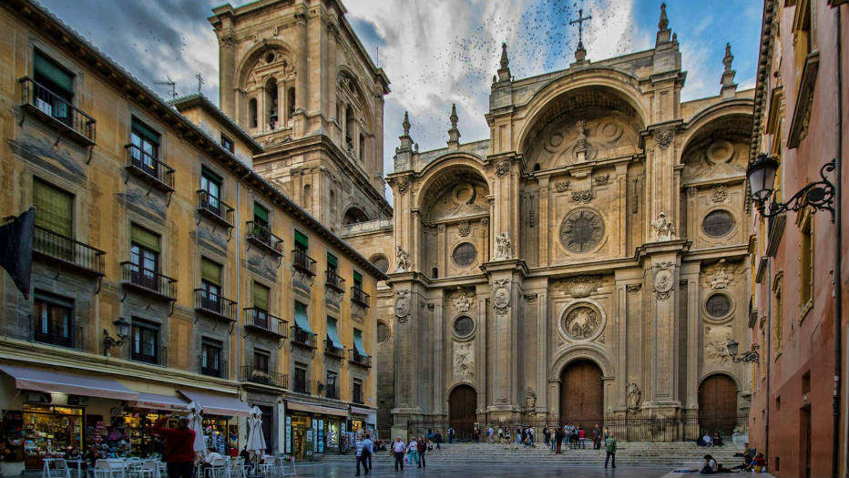
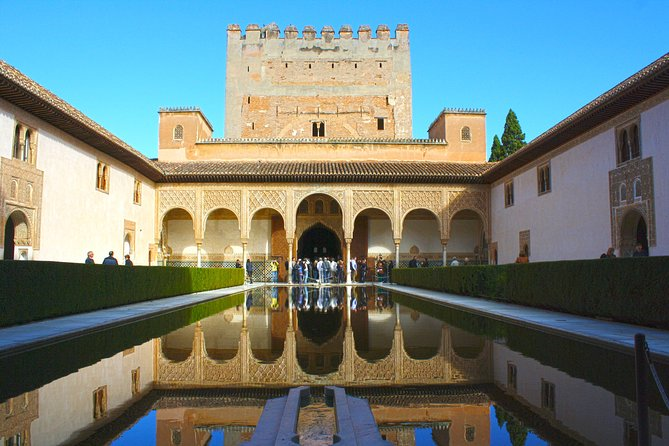

1 / 3

Alhambra
2 / 3

Catedral de Granada
3 / 3

Generalife
About
Granada is the capital city of the province of Granada, in the autonomous community of Andalusia, Spain. Granada is located at the foot of the Sierra Nevada mountains, at the confluence of four rivers, the Darro, the Genil, the Monachil and the Beiro. Ascribed to the Vega de Granada comarca, the city sits at an average elevation of 738 m (2,421 ft) above sea level, yet is only one hour by car from the Mediterranean coast, the Costa Tropical. Nearby is the Sierra Nevada Ski Station, where the FIS Alpine World Ski Championships 1996 were held.
In the 2005 national census, the population of the city of Granada proper was 236,982, and the population of the entire urban area was estimated to be 472,638, ranking as the 13th-largest urban area of Spain. About 3.3% of the population did not hold Spanish citizenship, the largest number of these people (31%; or 1% of the total population) coming from South America. Its nearest airport is Federico García Lorca Granada-Jaén Airport.
The Alhambra, an ancient Nasrid citadel and palace, is located in Granada. It is the most renowned building of the Islamic historical legacy with its many cultural attractions and architectural elements that make Granada a popular destination among the tourist cities of Spain. The Almohad influence on architecture is also preserved in the Granada neighborhood called the Albaicín with its fine examples of Moorish and Morisco construction. Granada is also well known within Spain for the University of Granada which has an estimated 82,000 students spread over five different campuses in the city. The pomegranate (in Spanish, granada) is the heraldic device of Granada.
History
Pre-Umayyad history
The region surrounding what today is Granada has been populated since at least 5500 BC and experienced Roman and Visigothic influences. The most ancient ruins found in the city belong to an Iberian oppidum called Ilturir, in the region known as Bastetania. This oppidum eventually changed its name to Iliberri, and after the Roman conquest of Iberia, to Municipium Florentinum Iliberitanum.
Founding and early history
In the early 11th century, after the collapse of the Umayyad Caliphate, the Berber Zawi ben Ziri established an independent kingdom for himself, the Taifa of Granada. His surviving memoirs – the only ones for the Spanish "Middle Ages"[10] – provide considerable detail for this brief period. The Zirid Taifa of Granada was a Jewish state in all but name; the Muslim king is looked upon as a mainly symbolic figurehead. It was the center of Jewish Sephardi culture and scholarship.
By the end of the 11th century, the city had spread across the Darro to reach the hill of the future Alhambra, and included the Albaicín neighborhood (now a World Heritage site). The Almoravids ruled Granada from 1090 and the Almohad dynasty from 1166.
During the 17th century, despite the importance of immigration, the population of the city stagnated at about 55,000, contrary to the trend of population increase experienced in the rural areas of the Kingdom of Granada, where the hammer of depopulation caused by the expulsion of the moriscos had taken a far greater toll in the previous century. The 17th-century demographic stagnation in the city and overall steady population increase in the wider kingdom contrasted with the demographic disaster experienced throughout the century in the rest of the Crown of Castile.
Geography
Location
The city of Granada sits on the Vega de Granada, one of the depressions or plains located within the Baetic mountain ranges, continued to the west by those of Archidona and Antequera and to the East by those of Guadix, Baza and Huéscar.
The fertile soil of the Vega, apt for agriculture, is irrigated by the water streams originated in Sierra Nevada, as well as minor secondary ranges, all drained by the catchment basin of the Genil River,[25] that cuts across the city centre following an east to west direction. The Monachil, a left-bank tributary of the former, also passes through the city, discharging into the Genil to the west of the city centre.
Climate
Granada has a hot-summer Mediterranean climate (Csa) close to a cold semi-arid climate (BSk) Summers are hot and dry with daily temperatures averaging 34 °C (93 °F) in the hottest month (July); however, temperatures reaching over 40 °C (104 °F) are not uncommon in the summer months. Winters are cool and damp, with most of the rainfall concentrated from November through to January. The coldest month is January with daytime temperatures hovering at 13 °C (55 °F) and dropping to around 1 °C (34 °F) during the night. Frost is quite common as temperatures usually reach below-freezing in the early morning. Spring and autumn are unpredictable, with temperatures ranging from mild to warm. Early summer in 2017 confronted the city with two massive heat waves that broke long-standing record temperatures starting on June 13, 2017, with a new maximum high for the month at 40.6 °C (old record 40.0), which was topped three times within the span of four days at 40.9 °C on June 14, 41.3 (June 15) and, eventually, 41.5 (June 17). The second extreme surge in temperatures followed roughly a month later when readings soared to 45.7 and 45.3 °C on July 12 and 13, respectively, surpassing the old July record by almost 3 degrees.
Tourist attractions
Alhambra